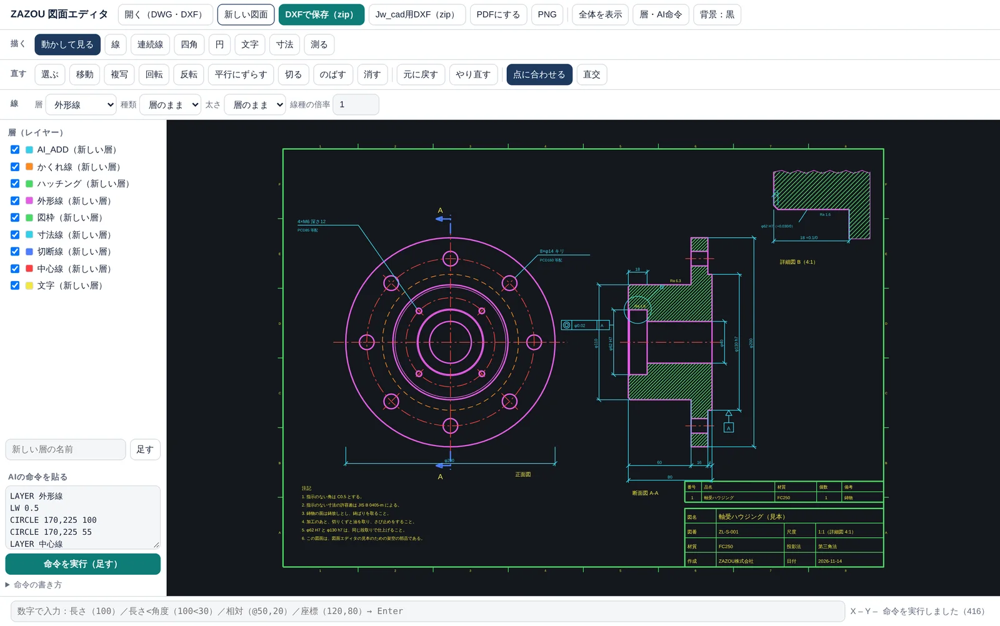
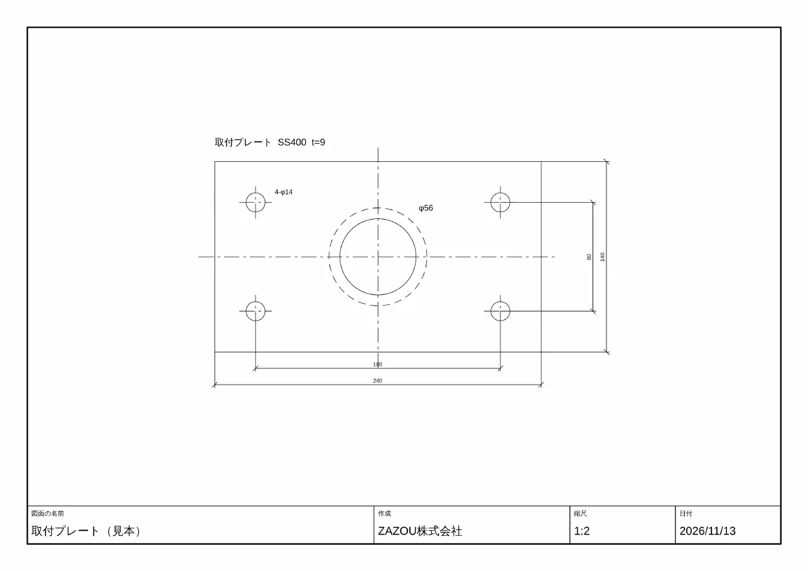

図面エディタ：
DWG・DXFの図面をブラウザで開き、線・円・寸法・文字を足し、移動・回転・切る・のばすなどの修正をして、DXFとPDFで出す、自社開発の2次元の作図ソフトです。元の図面は書きかえず、足した所と消した所だけを保存します。AIが書いた作図の命令を、そのまま図面に入れることもできます。
2026年11月に作り始めた試作です。下に、確かめたことと、まだのことを分けて書いています。

図面の仕事では、いただいた図面に寸法や注記を足す、形を少し直す、同じ形式で返す、という作業がよくあります。ZAZOUはAIで図面を読む仕組み（図面見積アプリ）を持っていますが、「読む」だけでなく「描いて返す」所までを自分の道具で通せるようにしました。
市販のCADを人が操作する形ではなく、AIが作図の命令を書き、人が画面で確かめて直す、という流れに合わせて作っています。図面を描き、読んできた設計者（パナソニックで約15年、機構設計）が、自分で使う道具として育てています。
| 分け方 | 中身 |
|---|---|
| 開く | DWG（2000〜2018年式）とDXFを開いて表示。層ごとの表示の切りかえ、拡大、移動、長さと角度の計測 |
| 描く | 線、連続線、四角、円、円弧、文字、寸法。数字での入力（長さ、長さと角度、相対座標、絶対座標）。端点・中点・中心への合わせ、直交 |
| 直す | 移動、複写、回転、反転、平行にずらす（オフセット）、切る（トリム）、のばす（延長）、消す、元に戻す。元の図面にあった線・円・円弧・連続線・文字・ブロックも直せます |
| 線 | 層を選んで描く、新しい層を足す。実線・破線・一点鎖線・二点鎖線・点線、線の太さ |
| AIの命令 | 文字で書いた作図の命令を貼ると、まとめて図面に入る（下に例） |
| 出す | DXFで保存（開いた図面と同じ年式）。A4・A3、縮尺1:1〜1:200、図面枠と表題欄つきのPDF |
「240×140の板に、四隅から30mmの位置にφ14の穴を4つ」のように頼むと、AIが下のような命令を書きます。これを貼ると、層に分かれた図面になります。数字はすべて目で読める形なので、人が見て直せます。
LAYER 外形 RECT 0,0 240,140 CIRCLE 30,30 7 CIRCLE 210,30 7 LAYER 中心線 LTYPE CENTER LINE -12,70 252,70 LAYER 寸法 DIM 0,0 240,0 -24 TEXT 44,116 5 "4-φ14"
AIは形を画面に直接描きません。命令という「読める中間の形」を1つはさむことで、まちがいを人が見つけやすくしています。

拡張子と年式は、図面の受け渡しでつまずきやすい所です。考え方をまとめます。
| DWG | DXF | |
|---|---|---|
| 中身 | 機械用の形。仕様は公開されていない | 文字で書いてある。仕様は公開されている |
| 読めるCAD | AutoCADと、その互換CAD | ほぼすべてのCAD（Jw_cadなど） |
| 大きさ | 小さい | DWGの数倍 |
| このソフト | 開ける。保存は変換ソフトを通す | 開ける。そのまま保存できる |
年式は、古いほうから R12、2000、2004、2007、2010、2013、2018 と区切られています。新しいCADは古い年式を開けますが、古いCADは新しい年式を開けません。迷ったときは、いただいた図面と同じ形式・同じ年式で返すのが安全です。
多くの変換ソフトは、図面を一度すべて読みこみ、自分の形に直してから書き出します。このとき、読めなかった形（特殊な寸法、表、ほかのCAD独自の形など）は落ちます。
このソフトは、元のDXFの文をそのまま残し、足す形を決まった位置にさしこみ、消す形だけを抜きます。画面に出せない形も、ファイルの中には手をふれずに残ります。足した形には、図面の中で重ならない番号をつけ、層や線の種類が無ければ表に足します。
松村貴士（ZAZOU株式会社 代表）。パナソニックで2005〜2020年、チューナの機構設計、洗濯機・ロボット掃除機の開発に携わり、図面を描き、読んできました（CATIA・NX・SolidWorks・MICRO CADAM Helix）。
図面見積アプリ：図面PDFから見積書の下書きまで図面への追記・修正のご相談を受けています。メール：matsumura.takashi@zazoucorp.com